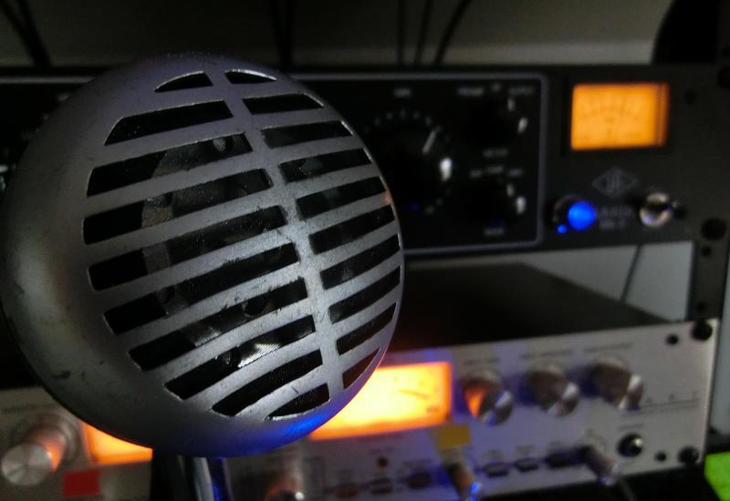

Hello, my name is Mike Skalandunas and this is my music project– Mosaic. I'm a graduate of Berklee College of Music, and have been working in games, specifically indie game audio, since 2011. In 2012, I worked side-by-side with composer Filippo Beck-Peccoz to create a wonderful toyshop sample library, and have since been freelancing. Over the years I've taken on many roles and shipped several titles, learned to develop audio tools, created hundreds of sounds, and written over one thousand pieces of music. My goal is to add to the immersion of each project I'm a part of, and to make the journey sound memorable.
Below you'll find my mission and some of the projects I've been a part of. Some are games where I've been the sole composer, some have been collaborations, and others are audio replacements. For more content, please visit my YouTube, my Soundcloud, and/or my Medium profiles.
I pride myself in creating high quality original music and sound using a combination of samples, sound design, live instruments, synthesis, and foley. When it comes to music, my goal is to make each piece feel organic, and I contribute to this goal by venturing out into nature for each new project and recording a myriad of sounds that may or may not have some musical merit. Besides using these sounds in music, as they are or effected to get the most out of them, I create custom instruments and VSTs to give these projects more of a distinct musical identity.
Beyond the sounds themselves, I use effects, synthesis, and composition techniques that add to this idea of organic music. Whether it be a flutter of strings to create a vibrant sense of borealism or a cloud filter to vault a piece into the ether– I find these artifices to be paramount in creating an atmosphere that grows out of characters and environments rather than just accompanies them.
Now, go listen.
Here are some of my works. The first reel contains both shipped titles and music redesigns, and the second is strictly redesigns. The redesign reel has a more current sketch of my writing style and the games I'd like to work with. Please check out my Soundcloud and YouTube channels for more.
Inspired by games like Ori and the Blind Forest and Seasons After Fall. I wanted to bring to life all of the woodland creatures, plants, and little spirits, so I used exotic winds and percussion from both Embertone and Soundiron to paint the proper picture. Strings, dulcimer, harp, and various synths/sound design as well.
Rashtal // PC, Mac, Linux // Music
0 A.D. // PC, Mac, Linux // Additional Music
Arakion // PC, Mac, Linux // Music
Yaga // PC, Mac // Sound Design
Downwind // XBox One, PC // Sound Design
The Beggar's Ride // Wii U, iOS, Android, PC, Mac // Additional Music
Bleat! // iOS, Android, PC, Mac // Music & Sound Design
Son of Nor // PC, Mac, Linux // Music
Oh My Giraffe // PC, Web // Music & Sound Design
The Last Tinker: City of Colors // PS4, PC, Mac, Linux // Additional Music
Stone Rage // PC, Web // Music
War Arcana // iOS // Music
Monster Charge // iOS, Android // Music
Alchementrix // PC, Mac // Music
Super Zombie Romance // Web // Music
Ninja Sequence // PC, Web // Music
A Night Forever // Web // Music
Tribulation // Web // Music
If you think we'd work well together and you'd like to collaborate, please send me a message at hello@mosaicmusic.io or find me via the social media links below.
-
Mike / Mosaic